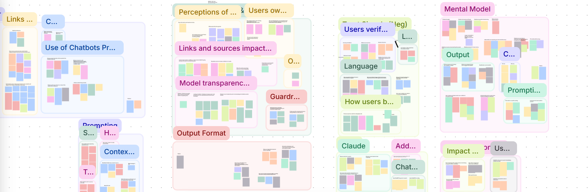
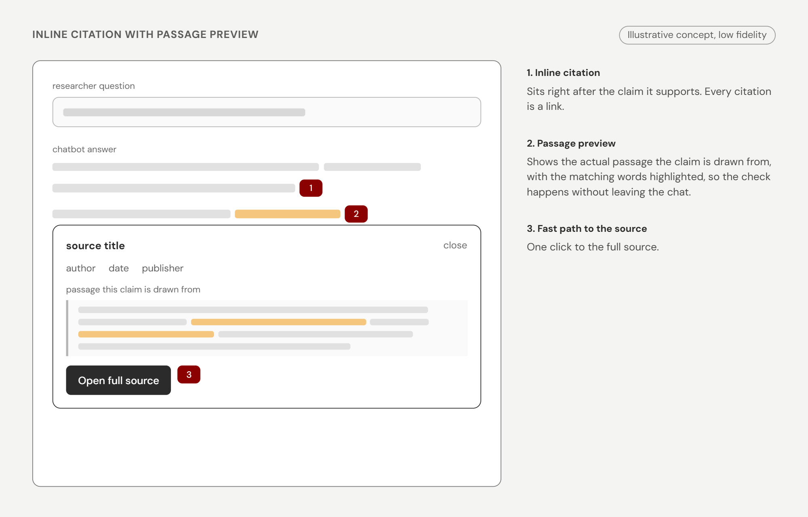

Understanding Generative AI Chatbots and User Trust
How do researchers decide whether to trust a chatbot’s output when doing academic research?
team
UX Research Intern Library Intern Sr. UX Researcher
my role
UX Research Intern
tools
Dovetail Figma
duration
2 months
quick summary
Harvard Library is building its own AI chatbot for research, but it had not studied how researchers decide whether to trust a chatbot’s output. Our team ran 11 moderated contextual inquiry sessions with experienced academic researchers, then analyzed them into six insights and four recommendations. I helped shape the session guide, moderated 4 of the sessions, contributed to the analysis, and wrote the final report.
The findings answered key research questions and provided design direction for the chatbot: inline citations with passage previews, easy access to original sources, a plain-language explainer on how the chatbot works, and a default voice that flags uncertainty.
context
Generative AI chatbots are becoming a common tool in academic research, but every response from an AI chatbot raises the question: can the output be trusted or not?
The decision to trust or not trust the output ends up shaping citations, argument, and conclusions in actual academic work. As Harvard Library moves toward building its own AI chatbot for research tasks and expands its broader research agenda around AI and users, understanding what drives trust or distrust is important.
goal
This was an exploratory study. Harvard Library had not previously researched how users evaluate trust in GenAI chatbot output, so the goal was to use the findings of the study to inform the design of Harvard Library’s new chatbot and the direction of their future research.
key research questions
How do researchers who use GenAI chatbots decide whether to trust a chatbot output when doing academic research?
How much does personal judgment, experience, and prior knowledge of the topic influence trust?
What aspects of the chatbot system and output shift belief up or down?
When a user doubts the response, what do they do next?
Does the task itself, its stakes, subject familiarity, or how long the conversation runs, change that threshold?
research methods: contextual inquiry
Our team ran 11 moderated contextual inquiry sessions with academic researchers who were experienced AI chatbot users (1+ years of experience using Gen AI chatbots). Each participant completed a series of realistic research tasks using their preferred chatbot, covering:
Low-stakes research
High-stakes research
Contested topics
A recent, real use case from their own research
After completing the tasks, participants answered a couple more questions about trust and their experience with AI chatbots.
research analysis: affinity diagramming
Following the contextual inquiry sessions, our team used Dovetail to code the transcripts by tagging data into buckets: positive, negative, behaviors, expectation, confusion, and observation. Then, we analyzed the tagged data and observations through affinity diagramming to identify major key findings.

findings
insight 01
Researchers have different mental models of how an AI chatbot works, especially how it finds and selects scholarly sources.
Participants described specific, confident, and sometimes contradictory beliefs about how AI works.
Specifically on sources, participants stated a variety of beliefs: AI scrapes articles from Google, is weak on older papers, pulls from Reddit and social media if guardrails aren’t in place, only consults top journals, etc.
These beliefs shaped how much they trusted the output and at times influenced how they prompted the chatbot.
“A PhD student could give me better sources than AI... it would only really find papers from the last 10 to 15 years... it also just neglects older, really equally needed literature or just chooses the most popular ones.”
insight 02
Researchers didn’t trust chatbot output by default, so they worked to establish trust themselves.
Check after: for most tasks, participants verified the output, usually by checking claims against the cited source.
Control before: some participants also built sophisticated, creative guardrails into their prompts to push the chatbot toward trustworthy output before it answered.
Either way, participants placed trust in their own process instead of the system. They trusted their ability to control the output and/or their ability to catch what’s wrong. Low-stakes tasks were the exception (see insight 04).
insight 03
A clickable citation was the strongest trust cue. But, it can only prove a source exists. It doesn’t prove the claim made is true.
Citations are important for trust but they’re not enough. Most participants said seeing a citation wasn’t enough on its own because they still needed to click through and check the source.
No citation was treated as a full stop.
The failure participants described most wasn’t a fabricated citation. Participants said those are rare now.
Currently, the most common failure was a real citation misrepresented, where the source exists but doesn’t accurately say what the chatbot claims. This is harder to catch than a fake citation, since it requires reading the source and comparing it word for word.
insight 04
As the stakes of a task increase, researchers leave the chatbot and go straight to the source.
Across sessions, participants were more likely to trust (and not verify) during a low-stakes task (e.g. find an article) but refused to trust it at all for a high-stakes task (e.g. find application information for a critical internship opportunity).
This tracks established trust theory (Mayer et al.; Lee & See): trust only becomes relevant where there’s real uncertainty and vulnerability. If there’s no risk then there’s nothing to trust.
insight 05
Researchers’ own expertise is a key check on the chatbot’s output, and it only works for familiar topics.
In their own research area, participants could spot weak output by checking it against what they already knew and discard it without needing outside sources.
The trust-testing behavior in insight 02 only worked with expertise. The participant who asked the chatbot questions she already knew the answer to said she could only do this in her specific research domain.
Participants were aware of their verification limits for unfamiliar subjects. They said things like, “maybe I don’t have a lot of prior knowledge on this, maybe I’m not actually going to be able to fully judge this.”
Expertise catches more than hallucinations. It lets researchers catch problems with framing and whether the response was useful for their thinking, or whether it answers the question they’re actually trying to ask.
What this means for design: this is further evidence for recommendations 01 and 02. Researchers without expertise can only check the output against the source, so passage previews and easy routing matter most for subject-area novices.
insight 06
Confidence in the chatbot’s tone reads as a red flag, but honesty about limitations increases trust.
When the chatbot expressed uncertainty or stated caveats, trust went up.
A polished, confident tone triggered skepticism. Participants read it as one-sided.
This runs counter to the default in most product design, which optimizes for confident, polished output.
my assumption challenged
I went in assuming that if a chatbot cites real sources, then users will trust it, but the sessions showed me that a clickable citation proves the paper exists and nothing more, so when it mattered, researchers clicked through and checked.
That changed how I framed the recommendations. The question stopped being “how do we make the chatbot more trustworthy?” and became “how do we support the checking researchers already do by hand?” It also changed what a good outcome looks like. Sometimes a good outcome is a researcher leaving the chat to read the primary source.
recommendation 01 — based on insights 03 and 05
Add inline clickable citations with a preview of the passage it references.
Cite inline with the actual passage a claim is drawn from because this is the gap participants are already closing manually by clicking through.
Hyperlink every citation without exception. Unlinked citations were named explicitly as a blocker to verification.
Especially important in unfamiliar topics, where researchers can’t check claims against what they already know (insight 05).
Start here: it addresses the check participants were already doing by hand, so it is the first thing I would build.

recommendation 02 — based on insights 04 and 05
Make it easy to get to the original source, especially for potentially high-stakes queries.
Make the path fast and prominent rather than trying to hold the researcher inside the chat. A researcher leaving to verify against the primary source is the tool doing its job.
Consider adjusting chatbot behavior when a query looks high-stakes, with more citations and faster routing to primary sources.
High stakes aren’t the only trigger. Unfamiliarity also makes checking the primary source more necessary (insight 05).
recommendation 03 — based on insights 01 and 02
Improve transparency by explaining how the chatbot works and how sources are chosen.
Why this is a transparency problem:
Participants didn’t know how the chatbot worked, which is why their mental models differed and often contradicted each other (insight 01).
They also didn’t trust it by default (insight 02).
So the work of making it trustworthy fell to them, through their own guardrails and checks (insight 02).
Improving transparency takes some of that burden off them.
What to do about it:
Draft a short, plain-language explainer on how the system actually finds and selects sources, written with the team building it so it is accurate for Harvard’s own system.
Address the beliefs participants raised most often, such as recency, source type, and journal prioritization, confirming the ones that are true and correcting the ones that aren’t.
Treat this as a hypothesis to test: does the explainer change how people prompt or how much they trust the output, and do they read it at all? The answer would also shape the Library’s future research on trust.
One place we saw transparency land: 7 of the 9 participants who used Claude brought up its live search unprompted, because it let them see what the chatbot was searching for and reading. A live view of the search process is one version of this to prototype and test. Most participants used the same tool, so we can’t say it would work elsewhere.
recommendation 04 — based on insight 06
Build the default voice to hedge and flag uncertainty.
Present contested evidence explicitly (“sources disagree on this point”) instead of smoothing it into one confident-sounding answer.
We also can’t overdo it. Too much stops acting as a signal and can be evasive. Targeted honesty about its limitations is what matters most.
Open question for future research: how novices build enough domain knowledge to evaluate output.
learnings
Move from observation to explanation My first draft of a finding was often a list of what participants did. The stronger insights explained why. I learned to look for that underlying explanation and treat it as a hypothesis to check against the data.
Follow what participants do For contextual inquiries, I learned to treat the session guide as a starting point. When a participant did something unexpected, following up revealed more than the planned questions would have. I learned to balance those detours against the tasks I still needed to cover.
Prioritize your research questions We had so many questions we wanted to ask, but it became clear during our pilot study that we needed to cut out quite a bit. Prioritize your research questions; keep additional questions if there’s time.
impact
Produced evidence on how researchers trust AI chatbot output and set design and research direction for Harvard Library’s research chatbot.
Answered the team’s key research questions on how researchers judge, verify, and act on GenAI output in academic research.
Provided design direction for Harvard Library’s chatbot: inline citations with passage previews, easy access to original sources, a plain-language explainer on how the chatbot works, and a default voice that flags uncertainty.
Surfaced findings that run counter to common product defaults, such as confident, polished answers reading as a red flag and citations proving a source exists but not that it supports the claim.
contribution
Shaped the study design by providing feedback on the contextual inquiry session guide to the UX Research lead and helped narrow the research questions after the pilot.
Moderated 4 of the 11 contextual inquiry sessions with academic researchers.
Helped turn data into findings. I coded transcripts in Dovetail and took part in the affinity diagramming session that produced the six insights.
Wrote the final report, including the four prioritized recommendations for Harvard Library’s chatbot.